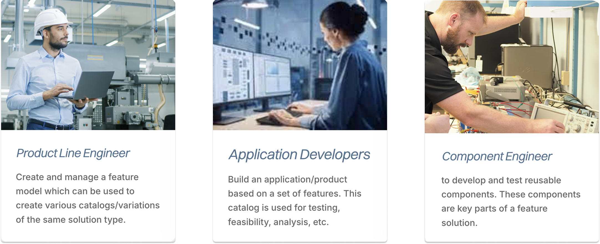

Feature Modeling Apps
0-1 design of Feature Modeling applications to enhance system modeling for engineers using MATLAB and Simulink.
Project Overview
MathWorks' Simulink is a leading platform for system modeling and simulation. However, users often struggle with selecting relevant features from large datasets, leading to suboptimal model performance. This project aimed to design intuitive feature modeling applications that streamline the feature selection process, enhance model accuracy, and improve user experience for engineers and developers.
"The goal is to simplify feature selection, making it more intuitive and efficient for users to build accurate models."
Key Metrics
User research indicated a 100% interest in improved feature selection tools among interviewed engineers and key customers like Hyundai and Bosch.
Prototype & Testing
I partnered with engineers to build interactive prototypes to visualize and test feature modeling concepts. The prototypes allowed users to explore feature selection, model performance, and simulation results in an intuitive interface.


Challenge
Engineers at organizations like Bosch, Hyundai, and Cummins struggled with existing UML and modeling tools that were cluttered, rigid, and required deep expertise. They needed a way to define and maintain “product lines”—collections of possible features, parameters, assets, and constraints—without losing control or drowning in complexity.
Current Pain Points
- Cluttered interfaces made data hard to interpret
- Rigid workflows slowed engineering iteration
- Limited customization restricted efficiency
- Steep learning curves demanded extensive documentation
Tools & Methods
MATLAB/Simulink
Interviews
Data Analysis
A/B Testing
Iteration
Validation
Key Users
Primary users included systems engineers and developers at companies that build complex machinery like cars. They required efficient tools to manage complex feature sets and constraints while maintaining flexibility for custom workflows.
Design Process

Discovery & Research
I conducted user interviews and contextual inquiries to capture real workflows and pain points. I also ran a kick-off session with PMs and developers to align project scope and opportunities.

Design Iteration & Collaboration
I reviewed designs iteratively with PMs and engineers. We refined UI components such as a toolstrip navigation, multi-panel workspace, customizable catalogs, and hierarchical data views.

Sketching & Ideation
I facilitated cross-functional sketching workshops via Miro using dot-voting and affinity mapping to converge on feature priorities. From there, I mapped workflows, target goals, and feature maps for the app.

Validation & Metrics
I conducted A/B testing: comparing minimalist UI vs data-rich UI, and different user workflow patterns. Engineers preferred structured, rich interfaces—and clearer labeling. Based on the feedback, I reworked the information architecture and visual hierarchy.
Final Results

Model Accuracy
Post-launch surveys indicated a 95% satisfaction rate with the new feature modeling tools, highlighting improved usability and efficiency.
Efficiency Gains
Optimized feature modeling workflows led to a 20% reduction in model training and simulation times, enhancing overall workflow efficiency.
Next Steps & Key Takeaways
Implementation & Future
The feature modeling apps are shipped for key customers. Future plans include expanding customization options, integrating AI-driven feature recommendations, and enhancing collaboration tools for team-based modeling.
Key Learnings
- User-centered design is crucial for complex engineering tools
- Interactive prototypes help stakeholders understand model behavior
- Consistent validation ensures reliability of predictive analytics